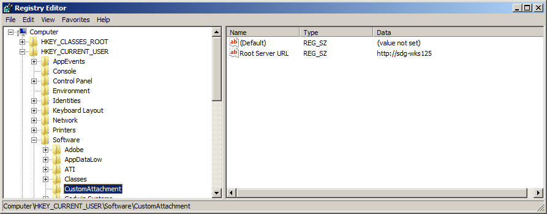
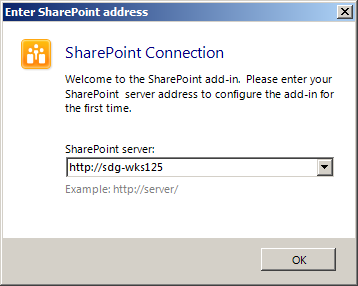
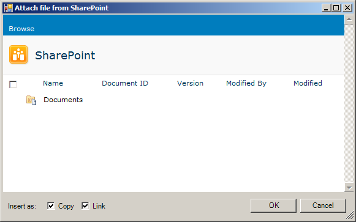
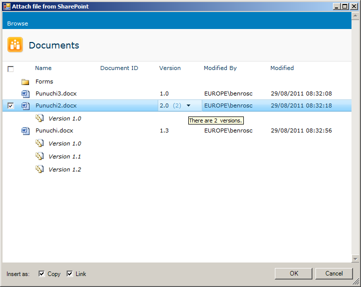

SharePoint 2010: Attaching File from Custom Web View to Outlook Message (Client)
Pre-requisites
- A SharePoint site installed at the root of a Web Application, with the document id feature turned on (Site Actions->Site Settings->Site collection features)

- Visual Studio 2010
- Outlook 2010
Note: This sample is to be used in conjunction with the corresponding Server sample and the technical article, Attaching Files from a Custom SharePoint WebView to an Outlook Message.
Development Technologies Used
Solution Overview
The solution Outlook.CustomAttachment contains a single VSTO outlook project which targets the .Net 4 Client Profile. The project contains the components for a custom approach to attaching files from SharePoint.
Installing the Server
Open the Outlook.CustomAttachment solution and click run – make sure Outlook is not currently running when this is done. Click New Email and then the Attach Document button in the SharePoint group:

When the custom dialog loads it will check the registry for the url of the site it should display

If it does not find an entry in the registry then the user will be prompted to provide a url, which will then be saved into the registry:

The sample will display child document libraries that are set to appear in the QuickLaunch in SharePoint (On the ribbon:
‘Library’->’Library Settings’->’Title, Description and Navigation’->’Display this document library on the Quick Launch’=Yes):

Double clicking on a child document library will display the documents in that library. If the document library has versioning turned on and documents with versions in it then they can also be displayed by clicking on the individual
file’s version column:

Checking items then clicking the OK button will attach the document to the email.